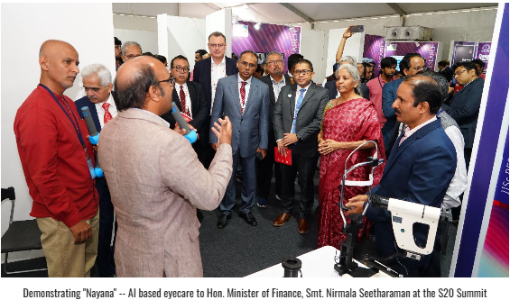
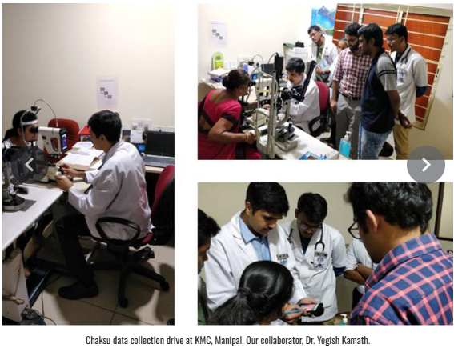

- January 20 - 25, 2025: SPARC Course on "Human Perception and Image Analysis in the Era of Machine Learning" at IISc Bengaluru. Instructors: Prof. Thrasyvoulos Pappas (Northwestern University, USA) and Prof. Gaurav Sharma (University of Rochester, USA). Registration is free but mandatory. Register here.
- January 17, 2025: A One-Day Symposium on Artificial Intelligence for Eyecare supported by SPARC, Ministry of Education, Govt. of India and Kotak IISc AI-ML Centre. Registration is free but mandatory. Register here.
- January 14, 2025: The new ChákṣuAI project website is launched!
- November 25, 2024: KIAC funding approved! We are excited to announce that our ChákṣuAI project has received funding from the Kotak IISc AI-ML Centre (KIAC). This funding will enable us to further develop deep technology solutions for public good.
Image Gallery



